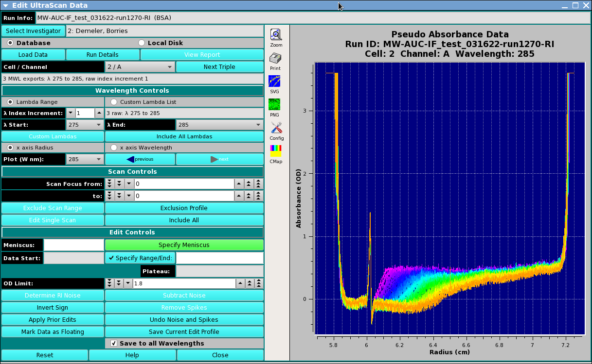

Edit UltraScan Multi-WaveLength (MWL) Data

Where the data loaded in an editing session is comprised of multiple
wavelengths (more than two), the main editor window is changed to the above
form. Instead of selecting triples to edit, this MWL edit procedure consists
of selecting Cell / Channel pairs and the wavelengths within those doubles.
Once editing in the normal way has been completed, the user may save the edit
for either the specific triple ("Save Current Edit Profile") or for all
of the wavelengths of the current double ("Save to all Wavelengths").
Most of the edit controls for MWL are the same as for the standard
Data Editor Window;
and are not repeated here. The steps and control objects described
herein are those specific to MWL processing.
Editing steps specific to MWL:
- Step 1: Load data from the database or a local data
directory. Select an entire runID so that MWL data is recognized as such.
- Step 2: Select the Cell / Channel to be edited;
specify the Lambda (wavelength) range to be edited; and select a single
wavelength for display and edit.
- Step 3: Specify editing parameters - such as Meniscus,
Data Range, and Plateau - in the normal Control-Click way.
- Step 4: Save editing for either the specific triple
selected or to be applied to all wavelengths of a cell / channel double.
Functions specific to MWL:
- Cell / Channel Select the double for which to perform
editing.
- Lamdba Range Select this radio button to indicate that
wavelength selection will be by start/end/increment specification.
- Custom Lambda List Alternatively, select this radio button to
indicate that wavelengths will be individually indicated in a list
dialog.
- λ Index Increment: Select the wavelength range increment.
- λ Start: Select the wavelength range start value.
- λ End: Select the wavelength range end value.
- Custom Lambdas Click to bring up a list dialog in which
individual output wavelengths can be enumerated.
- Include All Lambdas Reset the implied output wavelength range or
list to the full set of loaded dataset values.
- x axis Radius Select this radio button to indicate that the
plots of data should have an X axis of Radius (the default).
- x axis Wavelength Select this radio button to indicate that the
plots of data should have an X axis of Wavelength; and, therefore, that
each plot is for a selected Radius.
- Plot (W nm): Select the Wavelength (in NM) or (if the title
of this button is "Plot (R cm):" when the "x axis Wavelength"
radio button was selected) select the Radius (in CM) to plot and edit.
- (left arrow) previous Click to change the plot to the one for
the previous Wavelength or Radius value.
- (right arrow) next Click to change the plot to the one for
the next Wavelength or Radius value.
- Save Current Edit Profile Click this button (in the MWL case) to
save the current edit for the current Cell / Channel / Wavelength only.
- Save to all Wavelengths Click this button to save the current
edit for all wavelengths of the currently selected Cell / Channel.
 Manual
Manual